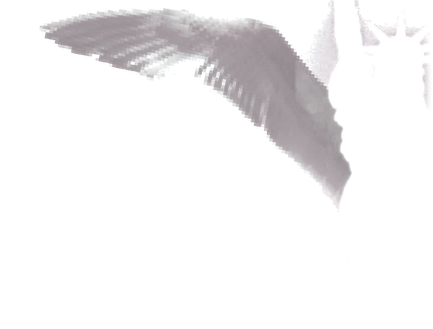
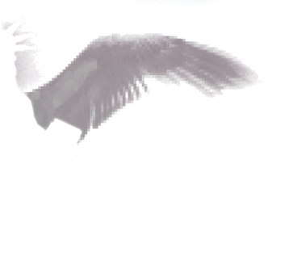
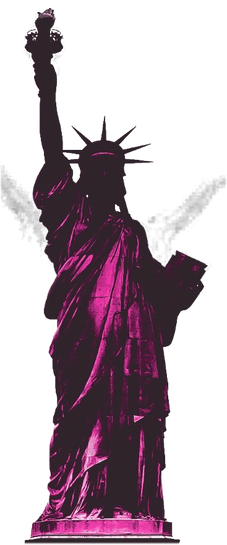
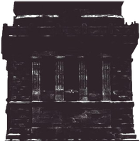
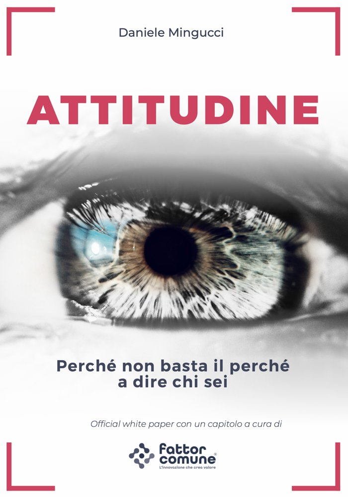
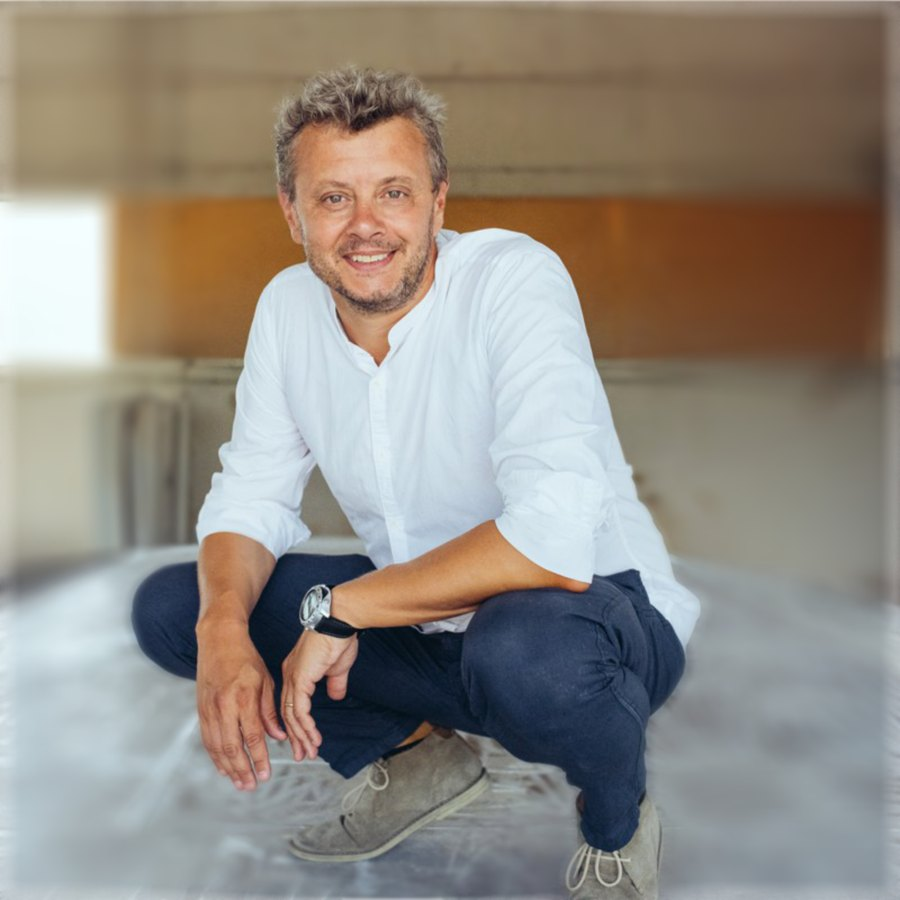
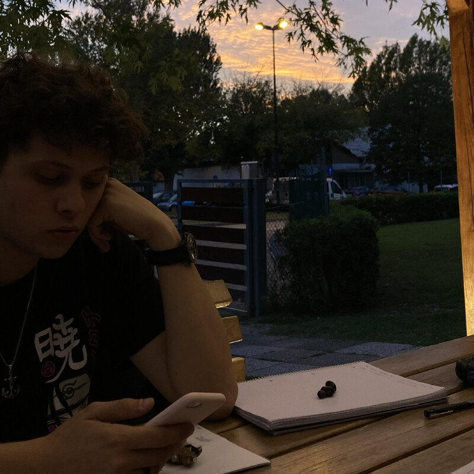

IMMAGINAZIONElibera




MNG-crea percorsi di marketing e comunicazione. Lo scopo è dotarsi di un'identità solida, connotata, consapevole. Poi vale tutto.
I tool sono i linguaggi, tutti i linguaggi. L'approccio è linguistico e narrativo: prima l'alfabeto, poi le parole. E infine le storie.

Vai al libro →Linguaggi
La creatività ha bisogno di argini. Come per un fiume, consentono alle idee di scorrere più veloci e nella direzione giusta. Uno di questi argini sono i linguaggi e le norme antichissime che li governano.
Solidità linguistica significa solidità di pensiero, la cosa più efficace per trasmettere sempre il giusto messaggio.
Web e new media
Il web è il luogo dove i linguaggi si incontrano: testo, immagine, suono, codice. Un sito non è una vetrina: è un sistema di interazione, e come ogni sistema ha le sue regole.
I new media non sostituiscono i linguaggi, li moltiplicano. Ogni canale ha la sua grammatica: prima l'identità, poi la tecnologia.
guarda i progetti →Con gli amici di Fattor Comune integriamo competenze e mansioni: dall'identità al sito, dai linguaggi alla cosa fatta. MNG-crea pensa e racconta, insieme realizziamo.
fattorcomune.com ↗

Family staff
Gestione familiare? Un po' sì e un po' no, perché oltre a Daniele (senior suo malgrado) e Andrea abbiamo uno stuolo di agenti AI (da noi A.I. sta per "Amici Immaginari") che ci supportano in modo straordinario e - non ci crederete - umano.
Sì perché l'AI made in MNG-crea è concepita come un tool che aumenta la capacità di realizzazione e di connessione, senza mai perdere il focus più importante: il nesso con la visione e i bisogni delle persone.